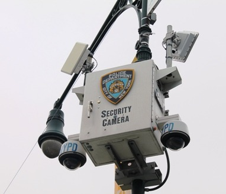
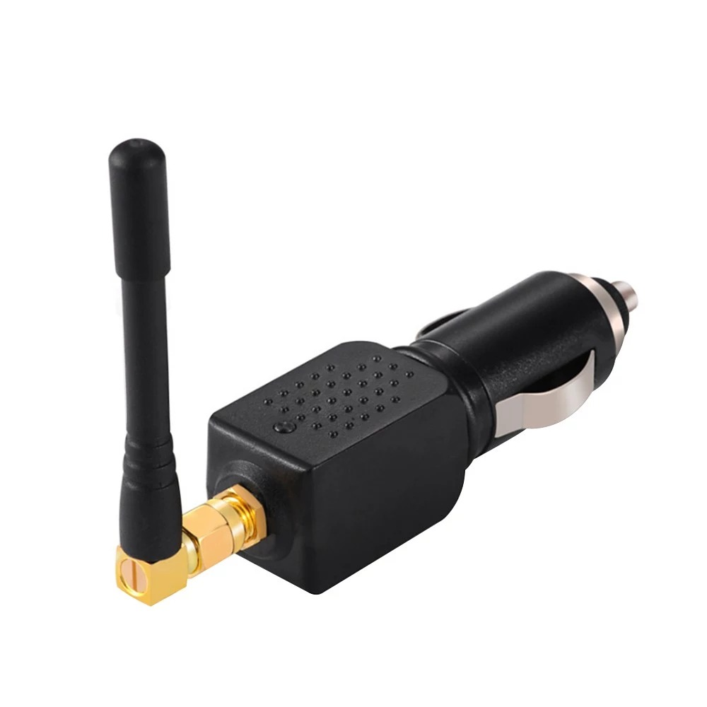

USCG Maritime Cyber Security Outreach Tool
As Cyber Security is on the rise, and shows no signs of stopping, it is inportnat to get an idea of how it all works.
×
Physical Vulnerabilities
CCTV Cameras Systems
Wireless Cameras
• A person can connect to the cameras and control them, where as with wired they can just disable them• The average jammers can jam in a radius of about 17 feet
• Low-powered jammers block calls in a range of about 30 feet (9 m). Higher-powered units create a cell-free zone as large as a football field.
• Units used by law enforcement can shut down service up to 1 mile (1.6 km) from the device.
Wired Cameras
• Wired cameras are more secure than wireless cameras.• An easy way for an attacker to shut down one of these cameras is by cuting the camera's power or wires.
Mitigations
• Prevent unauthorized access by locking the Wi-Fi signal. Securing your wireless network with Wireless Encryption Protocol (WEP) or Wi-Fi Protected Access (WPA).• To secure your wi-fi access, provide the user with an access key associated with a wireless router. Each time users connect with the wireless router they have to enter a security key to access the network.
GPS Equipment
GPS Spoofing
• GPS Spoofing is when an attacker sends false signals or frequencies to Systems causing them to become inaccurate.• This can lead to serious consequences, such as misleading aircraft and ships, disrupting transportation, and interfering with military operations.
• This is more sophisticated than GPS Jamming
Mitigations
• Put up extra antennas for redundancy.• Install blocking antennas, they be used to help defend against inference.
GPS Jamming
• GPS Jamming is when an attacker sends power radio signals to interfere the signals of the GPS, itself.• This can be done through a small little jammer.
• Even though illegal these can still be purchased online.
Mitigations
• Install blocking antennas, they be used to help defend against jamming.• Install GPSdomes, they are a small add-on device that can help provide protection against a GPS getting jammed.
• Below is an example of what a GPS Jammer could look like.
